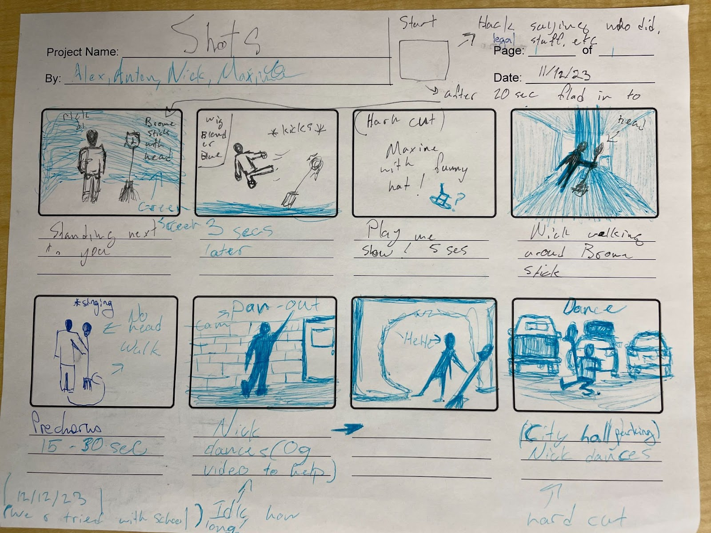
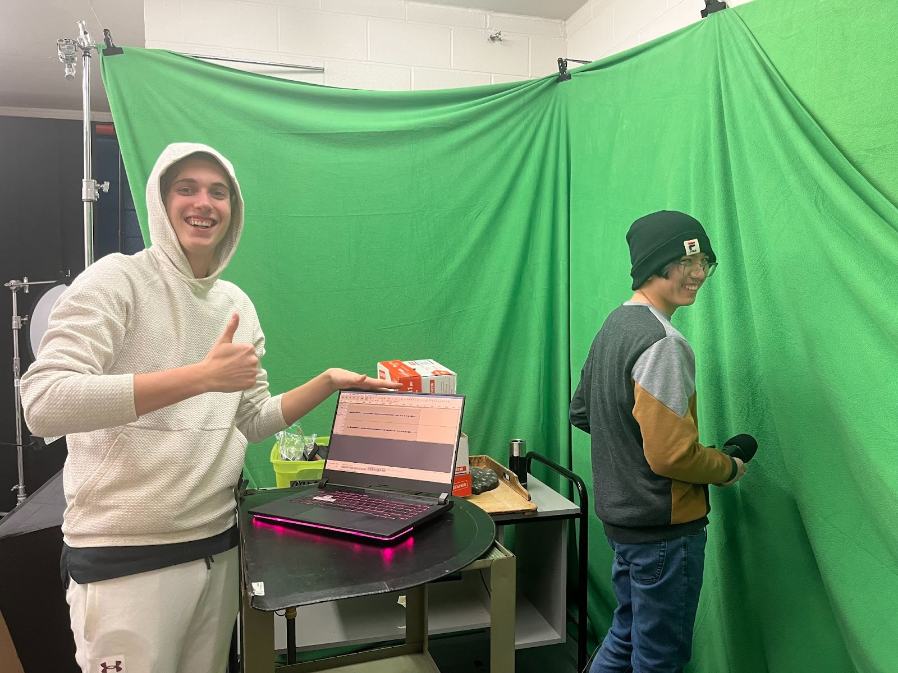

|

First, we started off by storyboarding. This storyboard, although it is quite simple, explains the overall story that we wanted. Originally, we wanted to shoot the video starting off in a hallway, but we couldn't get access to one so we ended up filming in the tunnels. Then we wanted to transition into the City Hall parking lot, but we struggled to film here too, so we ended up just filming outside in the round about.
|

Originally, we wanted to record our own recording of our song too (to maybe get bonus marks in the audio editing strand of this course that we didn't get to), but we realised really quickly that our singing and autotuning skills were not pleasant to listen to.
|